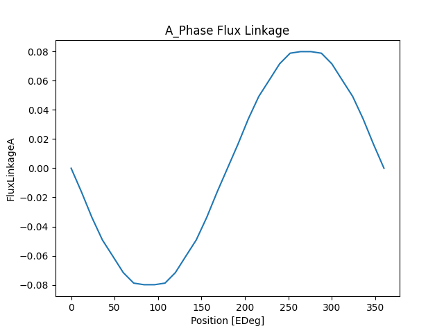
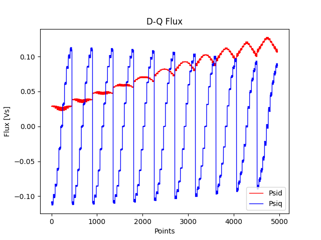
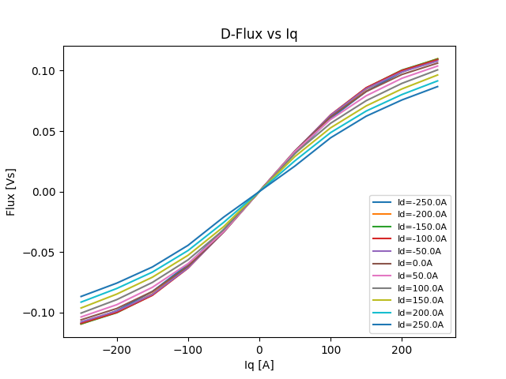
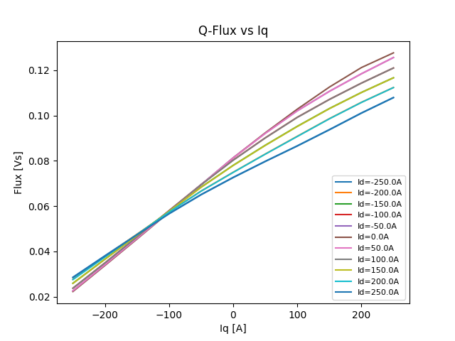

Note
Go to the end to download the full example code
Motor-CAD Twin Builder export#
This example provides a Motor-CAD script for exporting an equivalent circuit extraction (ECE) model for permanent magnet synchronous motors (PMSMs) from Motor-CAD to Ansys Twin Builder.
Set up example#
Setting up this example consists of performing imports, launching Motor-CAD, disabling all popup messages from Motor-CAD, and importing the initial settings.
Perform required imports#
Import the required packages.
import json
import math
import os
import matplotlib.pyplot as plt
import numpy as np
from scipy import io
import ansys.motorcad.core as pymotorcad
if "QT_API" in os.environ:
os.environ["QT_API"] = "pyqt"
Launch Motor-CAD#
Initialize ActiveX automation and launch Motor-CAD.
print("Starting initialization.")
mcad = pymotorcad.MotorCAD()
Starting initialization.
Disable popup messages#
Disable all popup messages from Motor-CAD.
mcad.set_variable("MessageDisplayState", 2)
Import and save initial settings#
You use the read_parameters method to import initial settings
from a JSON file:
Specify the working directory.
Open the JSON file and import the initial settings.
json_file = os.path.join(working_folder, "ece_config.json")
in_data = read_parameters(json_file)
mot_file = in_data["mot_file"]
shaft_speed = in_data["shaft_speed"]
dc_bus_voltage = float(in_data["dc_bus_voltage"])
machine_temp = float(in_data["machine_temp"])
Id_max = float(in_data["Id_max"])
current_step = float(in_data["current_step"])
map_name = in_data["map_name"]
txt_file = in_data["txt_file"]
sml_file = in_data["sml_file"]
Save input settings to a MCAD file.
mcad.load_template("e8")
mcad_name = "e8_mobility"
mcad.save_to_file(os.path.join(working_folder, mcad_name))
Run simulation#
Detect alignment angles and run the simulation.
points_per_cycle = 30
mcad.set_variable("DCBusVoltage", dc_bus_voltage)
mcad.set_variable("ArmatureConductor_Temperature", machine_temp)
mcad.set_variable("Magnet_Temperature", machine_temp)
mcad.set_variable("Shaft_Temperature", machine_temp)
mcad.set_variable("CurrentDefinition", 0)
mcad.set_variable("MagneticThermalCoupling", 0)
mcad.set_variable("BackEMFCalculation", True)
mcad.set_variable("TorquePointsPerCycle", points_per_cycle)
mcad.set_variable("ShaftSpeed", shaft_speed)
mcad.set_variable("PeakCurrent", 0)
mcad.set_variable("CoggingTorqueCalculation", False)
mcad.set_variable("TorqueCalculation", False)
mcad.set_variable("TorqueSpeedCalculation", False)
try:
mcad.do_magnetic_calculation()
except pymotorcad.MotorCADError:
print("Calculation failed.")
Plot the flux linkage for the A phase.
Calculate the torque points per cycle.
p = mcad.get_variable("Pole_Number")
drive = mcad.get_variable("DriveOffsetAngleLoad")
phase_res = mcad.get_variable("ArmatureWindingResistancePh")
phase_l = mcad.get_variable("EndWdgInductance_Used")
drive_offset = 90 + drive
p = p / 2
max_elec_degree = 120
Define the factor function.
fac = []
d = 2
n = drive_offset
while n >= d:
if n % d == 0:
fac.append(d)
n /= d
else:
d = d + 1
fac_size = len(fac)
elec_deg = fac[fac_size - 1]
i = 1
while (max_elec_degree / elec_deg) < 30:
elec_deg = fac[fac_size - 1 - i]
i = i + 1
m_period = max_elec_degree / p
mec_deg = float(float(elec_deg) / float(p))
points_per_cycle = 360 / elec_deg
Calculate the saturation map.
mcad.set_variable("TorquePointsPerCycle", points_per_cycle)
mcad.set_variable("SaturationMap_ExportFile", map_name)
mcad.set_variable("SaturationMap_InputDefinition", 1)
mcad.set_variable("SaturationMap_CalculationMethod", 1)
mcad.set_variable("SaturationMap_FEACalculationType", 1)
mcad.set_variable("SaturationMap_ResultType", 1)
mcad.set_variable("LossMap_Export", False)
mcad.set_variable("SaturationMap_Current_D_Max", Id_max)
mcad.set_variable("SaturationMap_Current_D_Step", current_step)
mcad.set_variable("SaturationMap_Current_D_Min", -Id_max)
mcad.set_variable("SaturationMap_Current_Q_Max", Id_max)
mcad.set_variable("SaturationMap_Current_Q_Step", current_step)
mcad.set_variable("SaturationMap_Current_Q_Min", -Id_max)
try:
mcad.calculate_saturation_map()
except pymotorcad.MotorCADError:
print("Map calculation failed.")
Load the saturation map.
mat_file_data = io.loadmat(map_name)
id_peak = mat_file_data["Id_Peak"]
iq_peak = mat_file_data["Iq_Peak"]
angular_flux_linkage_d = mat_file_data["Angular_Flux_Linkage_D"]
angular_flux_linkage_q = mat_file_data["Angular_Flux_Linkage_Q"]
angular_flux_linkage_1 = mat_file_data["Angular_Flux_Linkage_Phase_1"]
angular_flux_linkage_2 = mat_file_data["Angular_Flux_Linkage_Phase_2"]
angular_flux_linkage_3 = mat_file_data["Angular_Flux_Linkage_Phase_3"]
angular_rotor_position = mat_file_data["Angular_Rotor_Position"]
angular_electromagnetic_torque = mat_file_data["Angular_Electromagnetic_Torque"]
phase_advance = mat_file_data["Phase_Advance"]
d_values = len(id_peak)
q_values = len(id_peak[0])
comb = d_values * q_values
map_points = int((max_elec_degree / elec_deg) + 1)
rot_pos = (max_elec_degree / p) + 1
ind = 0
index_1 = []
flux_d_2 = []
flux_q_3 = []
flux_0_4 = []
torque_5 = []
id_6 = []
iq_7 = []
phase_ad_8 = []
rotor_pos_9 = []
final_table = []
skip = math.ceil(drive_offset / elec_deg)
Implement the final table.
for i in range(d_values):
for j in range(q_values):
for k in range(int(skip), int(skip - map_points), (-1)):
ind = ind + 1
if k < 0:
kprimo = int(points_per_cycle + k)
index_1.append(ind - 1)
flux_d_2.append(angular_flux_linkage_d[i, j, kprimo])
flux_q_3.append(angular_flux_linkage_q[i, j, kprimo])
flux_0_4.append(0)
torque_5.append(-angular_electromagnetic_torque[i, j, kprimo])
id_6.append(id_peak[i, j])
iq_7.append(iq_peak[i, j])
phase_ad_8.append(phase_advance[i, j])
rotor_pos_9.append(angular_rotor_position[i, j, kprimo])
else:
index_1.append(ind - 1)
flux_d_2.append(angular_flux_linkage_d[i, j, k])
flux_q_3.append(angular_flux_linkage_q[i, j, k])
flux_0_4.append(0)
torque_5.append(-angular_electromagnetic_torque[i, j, k])
id_6.append(id_peak[i, j])
iq_7.append(iq_peak[i, j])
phase_ad_8.append(phase_advance[i, j])
rotor_pos_9.append(angular_rotor_position[i, j, k])
final_table = np.array(
[index_1, flux_d_2, flux_q_3, flux_0_4, torque_5, id_6, iq_7, phase_ad_8, rotor_pos_9]
)
Plot results#
Plot flux linkage in the A phase.
plt.figure(1)
plt.plot(e_deg, flux_a)
plt.xlabel("Position [EDeg]")
plt.ylabel("FluxLinkageA")
plt.title("A_Phase Flux Linkage")
plt.show()
# Plot the D-Q flux.
plt.figure(2)
plt.plot(index_1, flux_d_2, "r", index_1, flux_q_3, "b", linewidth=1.0)
plt.xlabel("Points")
plt.ylabel("Flux [Vs]")
plt.legend(["Psid", "Psiq"], loc="lower right")
plt.title("D-Q Flux")
plt.show()
- 
- 
Plot torque.
Plot D-flux linkages versus the q-axis current.
plt.figure(3)
for i in range(d_values):
plt.plot(
iq_peak[0, :], angular_flux_linkage_q[i, :, skip], label="Id=" + str(id_peak[i, 0]) + "A"
)
plt.ylabel("Flux [Vs]")
plt.xlabel("Iq [A]")
plt.legend(fontsize=8, loc="lower right")
plt.title("D-Flux vs Iq")
plt.show()
# Plot Q-flux linkages versus the q-axis current.
plt.figure(4)
for i in range(d_values):
plt.plot(
iq_peak[0, :], angular_flux_linkage_d[:, i, skip], label="Id=" + str(id_peak[i, 0]) + "A"
)
plt.legend(fontsize=8, loc="lower right")
plt.ylabel("Flux [Vs]")
plt.xlabel("Iq [A]")
plt.title("Q-Flux vs Iq")
plt.show()
- 
- 
Write TXT and SML files#
Write the TXT text.
rows = len(index_1)
file_id = open(txt_file, "w")
file_id.write("%6s\r\n" % "B_BasicData")
file_id.write("%6s\r\n" % " Version 1.0")
file_id.write("%6s %i\r\n" % (" Poles", p * 2))
file_id.write("%6s\r\n\n" % "E_BasicData")
file_id.write("%6s\r\n" % "B_PhaseImp 3")
file_id.write("%6s %12.10e %s %12.10e\r\n" % (" WG_Ph1", phase_res, " ", phase_l))
file_id.write("%6s %12.10e %s %12.10e\r\n" % (" WG_Ph2", phase_res, " ", phase_l))
file_id.write("%6s %12.10e %s %12.10e\r\n" % (" WG_Ph3", phase_res, " ", phase_l))
file_id.write("%6s\r\n\n" % "E_PhaseImp")
file_id.write("%6s\r\n\n" % "B_Sweepings")
file_id.write("%s %i %s" % (" Id_Iq (", d_values, ":"))
for i in range(d_values):
file_id.write("%s %i" % (" ", id_peak[i, 0]))
file_id.write("%s\n" % ")")
file_id.write("%s %i %s" % (" (", q_values, ":"))
for i in range(q_values):
file_id.write("%s %i" % (" ", iq_peak[0, i]))
file_id.write("%s\n" % ")")
file_id.write("%s %i %s" % (" Rotate (", map_points, ":"))
for i in range(map_points):
file_id.write("%s %6.3f" % (" ", i * mec_deg))
file_id.write("%s\n" % ")")
file_id.write("%s\n\n" % "E_Sweepings")
file_id.write("%s\n" % "B_OutputMatrix DQ0")
for i in range(rows):
file_id.write(
"%10i %19.10e %19.10e %19.10e %19.10e\r\n"
% (index_1[i], flux_d_2[i], flux_q_3[i], flux_0_4[i], torque_5[i])
)
file_id.write("%s\n" % "E_OutputMatrix")
file_id.close()
Write the SML file.
file_id = open(sml_file, "w")
file_id.write("%6s\r\n" % "MODELDEF ECER_Model1")
file_id.write("%s\r\n" % "{")
file_id.write("%6s\r\n" % "PORT electrical: A0;")
file_id.write("%6s\r\n" % "PORT electrical: X0;")
file_id.write("%6s\r\n" % "PORT electrical: B0;")
file_id.write("%6s\r\n" % "PORT electrical: Y0;")
file_id.write("%6s\r\n" % "PORT electrical: C0;")
file_id.write("%6s\r\n" % "PORT electrical: Z0;")
file_id.write("%6s\r\n" % "PORT ROTATIONAL_V: ROT1;")
file_id.write("%6s\r\n" % "PORT ROTATIONAL_V: ROT2;")
file_id.write("%6s%4.3f%s\r\n" % ("PORT REAL IN: ra0 = ", phase_res, ";"))
file_id.write("%6s%4.0e%s\r\n" % ("PORT REAL IN: la0 = ", phase_l, ";"))
file_id.write("%6s\r\n" % "PORT REAL IN: IniIa0 = 0;")
file_id.write("%6s\r\n" % "PORT REAL IN: IniIb0 = 0;")
file_id.write("%6s\r\n" % "PORT REAL IN: IniIc0 = 0;")
file_id.write("%6s\r\n" % "PORT REAL OUT: Fluxa0 = AM_Fluxa0.I;")
file_id.write("%6s\r\n" % "PORT REAL OUT: Fluxb0 = AM_Fluxb0.I;")
file_id.write("%6s\r\n" % "PORT REAL OUT: Fluxc0 = AM_Fluxc0.I;")
file_id.write("%6s\r\n" % "PORT REAL OUT: Fluxd0 = AMFd.I;")
file_id.write("%6s\r\n" % "PORT REAL OUT: Fluxq0 = AMFq.I;")
file_id.write("%6s\r\n" % "PORT REAL IN ANGLE[deg]: IniPos = 0;")
file_id.write("%6s\r\n\n" % "PORT REAL OUT ANGLE[deg]: Pos = VM_Mdeg.V;")
file_id.write("%6s\r\n" % "INTERN R Ra0 N1:=A0, N2:=N_1 ( R:=ra0 );")
file_id.write("%6s\r\n" % "INTERN L La0 N1:=N_1, N2:=N_2 ( L:=la0, I0:=IniIa0 );")
file_id.write("%6s\r\n" % "INTERN AM AMa0 N1:=N_2, N2:=N_3 ;")
file_id.write("%6s\r\n" % "INTERN EV Ema0 N1:=N_3, N2:=X0 ( QUANT:=VMa0.V, FACT:=-1 ); ")
file_id.write("%6s\r\n" % "INTERN L Lma0 N1:=N_4, N2:=GND ( L:=1 ); ")
file_id.write("%6s\r\n" % "INTERN VM VMa0 N1:=N_4, N2:=GND ; ")
file_id.write("%6s\r\n" % "INTERN AM AM_Fluxa0 N1:=N_5, N2:=N_4 ; ")
file_id.write(
"%6s\r\n"
% "INTERN II Fluxad N1:=GND, N2:=N_5 ( QUANT:=AMFd.I, FACT:=cos(VM_Erad.V) ); "
)
file_id.write(
"%6s\r\n"
% "INTERN II Fluxaq N1:=GND, N2:=N_5 ( QUANT:=AMFq.I, FACT:=sin(VM_Erad.V) ); "
)
file_id.write("%6s\r\n" % "INTERN II Fluxao N1:=GND, N2:=N_5 ( QUANT:=AMFo.I, FACT:=1 ); ")
file_id.write(
"%6s\r\n\n" % "INTERN II Fluxa0 N1:=GND, N2:=N_5 ( QUANT:=AMo.I, FACT:=0 ); "
)
file_id.write("%6s\r\n" % "INTERN R Rb0 N1:=B0, N2:=N_6 ( R:=ra0 ); ")
file_id.write("%6s\r\n" % "INTERN L Lb0 N1:=N_6, N2:=N_7 ( L:=la0, I0:=IniIb0 );")
file_id.write("%6s\r\n" % "INTERN AM AMb0 N1:=N_7, N2:=N_8 ; ")
file_id.write("%6s\r\n" % "INTERN EV Emb0 N1:=N_8, N2:=Y0 ( QUANT:=VMb0.V, FACT:=-1 ); ")
file_id.write("%6s\r\n" % "INTERN L Lmb0 N1:=N_9, N2:=GND ( L:=1 ); ")
file_id.write("%6s\r\n" % "INTERN VM VMb0 N1:=N_9, N2:=GND ; ")
file_id.write("%6s\r\n" % "INTERN AM AM_Fluxb0 N1:=N_10, N2:=N_9 ; ")
file_id.write(
"%6s\r\n"
% (
"INTERN II Fluxbd N1:=GND, N2:=N_10 "
"( QUANT:=AMFd.I, FACT:=cos(VM_Erad.V-2*PI/3) );"
)
)
file_id.write(
"%6s\r\n"
% (
"INTERN II Fluxbq N1:=GND, N2:=N_10 "
"( QUANT:=AMFq.I, FACT:=sin(VM_Erad.V-2*PI/3) ); "
)
)
file_id.write(
"%6s\r\n" % "INTERN II Fluxbo N1:=GND, N2:=N_10" " ( QUANT:=AMFo.I, FACT:=1 ); "
)
file_id.write(
"%6s\r\n\n" % "INTERN II Fluxb0 N1:=GND, N2:=N_10" " ( QUANT:=AMo.I, FACT:=0 ); "
)
file_id.write("%6s\r\n" % "INTERN R Rc0 N1:=C0, N2:=N_11 " "( R:=ra0 ); ")
file_id.write("%6s\r\n" % "INTERN L Lc0 N1:=N_11, N2:=N_12" " ( L:=la0, I0:=IniIc0 ); ")
file_id.write("%6s\r\n" % "INTERN AM AMc0 N1:=N_12, N2:=N_13" " ; ")
file_id.write(
"%6s\r\n" % "INTERN EV Emc0 N1:=N_13, N2:=Z0" " ( QUANT:=VMc0.V, FACT:=-1 ); "
)
file_id.write("%6s\r\n" % "INTERN L Lmc0 N1:=N_14, N2:=GND" " ( L:=1 ); ")
file_id.write("%6s\r\n" % "INTERN VM VMc0 N1:=N_14, N2:=GND" " ;")
file_id.write("%6s\r\n" % "INTERN AM AM_Fluxc0 N1:=N_15," " N2:=N_14 ;")
file_id.write(
"%6s\r\n"
% (
"INTERN II Fluxcd N1:=GND, N2:=N_15 "
"( QUANT:=AMFd.I, FACT:=cos(VM_Erad.V-4*PI/3) ); "
)
)
file_id.write(
"%6s\r\n"
% (
"INTERN II Fluxcq N1:=GND, N2:=N_15"
" ( QUANT:=AMFq.I, FACT:=sin(VM_Erad.V-4*PI/3) ); "
)
)
file_id.write(
"%6s\r\n" % "INTERN II Fluxco N1:=GND," " N2:=N_15 ( QUANT:=AMFo.I, FACT:=1 ); "
)
file_id.write(
"%6s\r\n\n" % "INTERN II Fluxc0 N1:=GND," " N2:=N_15 ( QUANT:=AMo.I, FACT:=0 );"
)
file_id.write("%6s\r\n" % "INTERN AM" " AMFd N1:=N_16, N2:=GND ; ")
file_id.write("%6s\r\n" % "INTERN" " AM AMFq N1:=N_17, N2:=GND ;")
file_id.write("%6s\r\n\n" % "INTERN" " AM AMFo N1:=N_18, N2:=GND ; ")
file_id.write(
"%6s\r\n" % "INTERN II Id0 N1:=GND,"
" N2:=N_19 ( QUANT:=AMa0.I, FACT:=2/3*cos(VM_Erad.V) ); "
)
file_id.write(
"%6s\r\n"
% (
"INTERN II Id1 N1:=GND, N2:=N_19"
" ( QUANT:=AMb0.I, FACT:=2/3*cos(VM_Erad.V-2*PI/3) ); "
)
)
file_id.write(
"%6s\r\n"
% (
"INTERN II Id2 N1:=GND, N2:=N_19"
" ( QUANT:=AMc0.I, FACT:=2/3*cos(VM_Erad.V-4*PI/3) );"
)
)
file_id.write("%6s\r\n" % "INTERN AM AM0 N1:=N_19," " N2:=GND ;")
file_id.write(
"%6s\r\n" % "INTERN II Iq0 N1:=GND, N2:=N_20"
" ( QUANT:=AMa0.I, FACT:=2/3*sin(VM_Erad.V) ); "
)
file_id.write(
"%6s\r\n"
% (
"INTERN II Iq1 N1:=GND, N2:=N_20"
" ( QUANT:=AMb0.I, FACT:=2/3*sin(VM_Erad.V-2*PI/3) ); "
)
)
file_id.write(
"%6s\r\n"
% (
"INTERN II Iq2 N1:=GND, N2:=N_20"
" ( QUANT:=AMc0.I, FACT:=2/3*sin(VM_Erad.V-4*PI/3) ); "
)
)
file_id.write("%6s\r\n" % "INTERN AM AM1 N1:=N_20," " N2:=GND ; ")
file_id.write(
"%6s\r\n" % "INTERN II I00 N1:=GND," " N2:=N_21 ( QUANT:=AMa0.I, FACT:=1/3 ); "
)
file_id.write(
"%6s\r\n" % "INTERN II I01 N1:=GND," " N2:=N_21 ( QUANT:=AMb0.I, FACT:=1/3 ); "
)
file_id.write(
"%6s\r\n" % "INTERN II I02 N1:=GND," " N2:=N_21 ( QUANT:=AMc0.I, FACT:=1/3 ); "
)
file_id.write("%6s\r\n\n" % "INTERN " "AM AMo N1:=N_21, N2:=GND ; ")
file_id.write("%6s\r\n" % "INTERN " "VM VM_Speed N1:=N_23, N2:=N_22 ; ")
file_id.write(
"%6s\r\n"
% (
"UMODEL D2D "
'D2D1 N1:=N_23, N2:=ROT1 ( NATURE_1:="electrical",'
' NATURE_2:="Rotational_V" ) SRC: DLL( File:="Domains.dll");'
)
)
file_id.write(
"%6s\r\n"
% (
"UMODEL D2D "
'D2D2 N1:=N_22, N2:=ROT2 ( NATURE_1:="electrical",'
' NATURE_2:="Rotational_V" ) SRC: DLL( File:="Domains.dll");'
)
)
file_id.write(
"%6s\r\n" % "INTERN IV "
"Gx N1:=GND,"
" N2:=N_24 ( QUANT:=VM_Speed.V, FACT:=57.29578 ); "
)
file_id.write("%6s\r\n" % "INTERN C" " " "Cx N1:=N_24, N2:=GND ( C:=1, V0:=IniPos ); ")
file_id.write("%6s\r\n" % "INTERN VM" "" " VM_Mdeg N1:=N_24, N2:=GND ; ")
file_id.write(
"%6s\r\n" % "INTERN IV" "" " Ipos N1:=GND, N2:=N_25 ( QUANT:=VM_Mdeg.V, FACT:=1 ); "
)
file_id.write("%6s\r\n" % "INTERN AM" "" " AM2 N1:=N_25, N2:=N_26 ; ")
file_id.write(
"%6s %8.7f %s\r\n"
% ("INTERN R" " Rpos N1:=N_26, N2:=GND ( R:=", 0.0174533 * p, " ); ")
)
file_id.write("%6s\r\n\n" % "INTERN VM" "" " VM_Erad N1:=N_26, N2:=GND ;")
file_id.write(
"%6s\r\n"
% (
"INTERN NDSRC PECER_Model1 N0:=GND,"
" N1:=N_16, N2:=GND, N3:=N_17,"
" N4:=GND, N5:=N_18, N6:=N_22, N7:=N_23 \ "
)
)
file_id.write(
"%6s\r\n" % " ( QUANT:={ AM0.I, AM1.I, AM2.I },"
' SRC:={ isrc, isrc, isrc, isrc }, TableData:="\ '
)
file_id.write("%6s" % ".MODEL ECER_Model1_table pwl TABLE=(")
file_id.write("%s%u%s" % (" ", d_values, ","))
index = 0
for i in range(d_values):
file_id.write("%s%d" % (" ", id_peak[i, 0]))
file_id.write("%s" % ",")
if i == (d_values - 1):
file_id.write("%s\n" % "\ ")
file_id.write("%s" % " 0,")
for r in range(d_values):
file_id.write("%s%u%s" % (" ", q_values, ","))
for i in range(q_values):
file_id.write("%s%d" % (" ", iq_peak[0, i]))
file_id.write("%s" % ",")
if i == (q_values - 1):
file_id.write("%s\n" % "\ ")
file_id.write("%s" % " 0,")
for k in range(q_values):
file_id.write("%s%u%s" % (" ", map_points, ","))
for i in range(map_points):
file_id.write("%s%6.3f" % (" ", i * mec_deg))
file_id.write("%s" % (","))
if i == (map_points - 1):
file_id.write("%s\n" % "\ ")
file_id.write("%s" % " 4,")
for j in range(1, 5):
for i in range(map_points):
file_id.write("%s%f" % (" ", final_table[int(j), int(index + i)]))
file_id.write("%s" % (","))
if r == (d_values - 1) and k == (q_values - 1) and j == 4 and i == (map_points - 1):
file_id.write("%s\r\n" % ") LINEAR LINEAR PERIODIC\ ")
file_id.write("%s\r\n" % ' DEEPSPLINE" );')
file_id.write("%s\r\n" % "}")
elif i == (map_points - 1):
file_id.write("%s\n" % "\ ")
index = index + map_points
file_id.close()
Exit Motor-CAD#
Exit Motor-CAD.
mcad.quit()
Total running time of the script: (8 minutes 4.693 seconds)